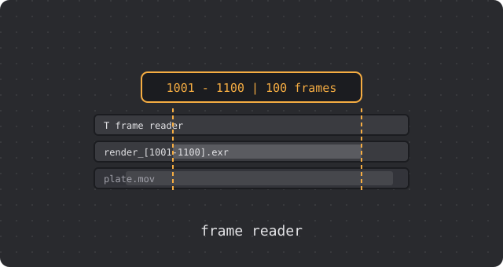

v1.0 · After EffectsAFX Frame Reader
Una capa de texto que te dice qué frames de la secuencia de render se ven en la composición, y cuántos son.
Huella SHA-256 de la expresión en SHA256SUMS.
Uso
- Crea una capa de texto encima de la secuencia que quieres medir.
- Despliega Text, haz Alt + clic en el cronómetro de Source Text y pega la expresión.
- El texto muestra primer frame - último frame | total de la parte que se ve en la composición.
Lee la primera capa de metraje visible por debajo del texto en el frame actual, así que puedes moverte por el timeline y va cambiando de capa. Tiene en cuenta el recorte de la capa, el time stretch y el time remap.
Saca el número del primer frame del nombre: render_[1001-1100].exr o render_1001.exr. Si el nombre no tiene números, empieza a contar desde 1.
Ignora capas de texto, formas, cámaras y luces, y las capas con opacidad 0. Si no encuentra ninguna, muestra «No visible footage layer».